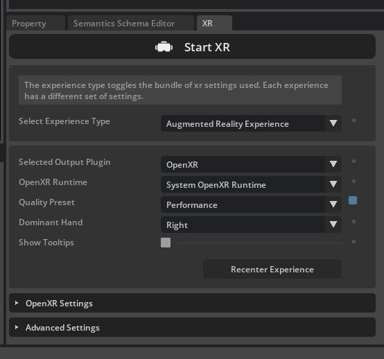
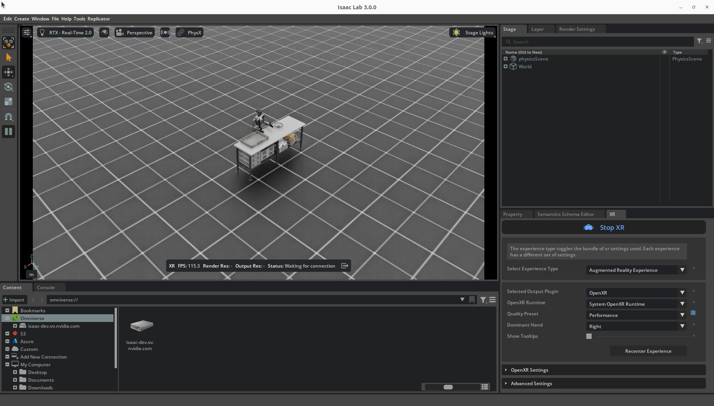
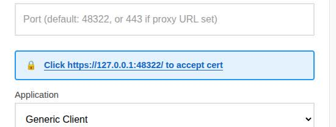
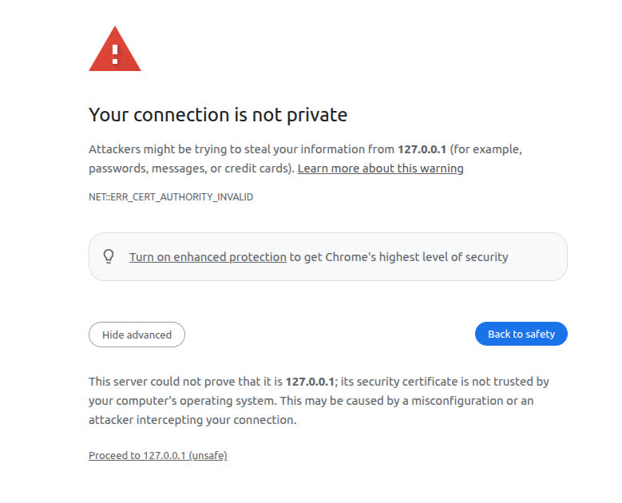
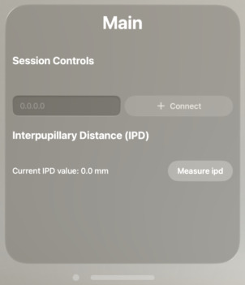
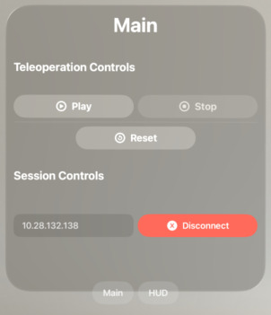
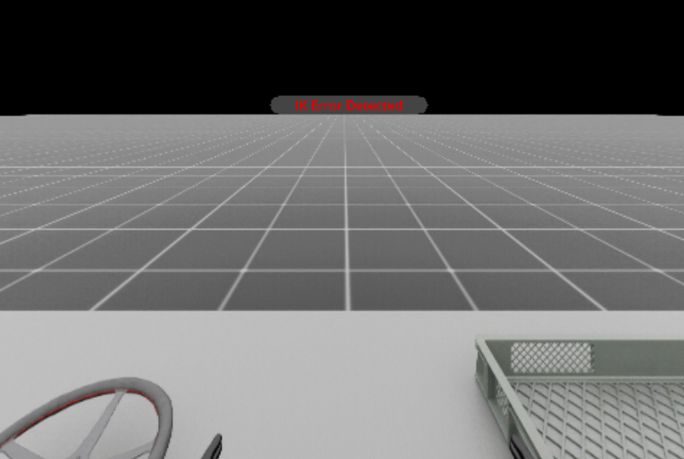
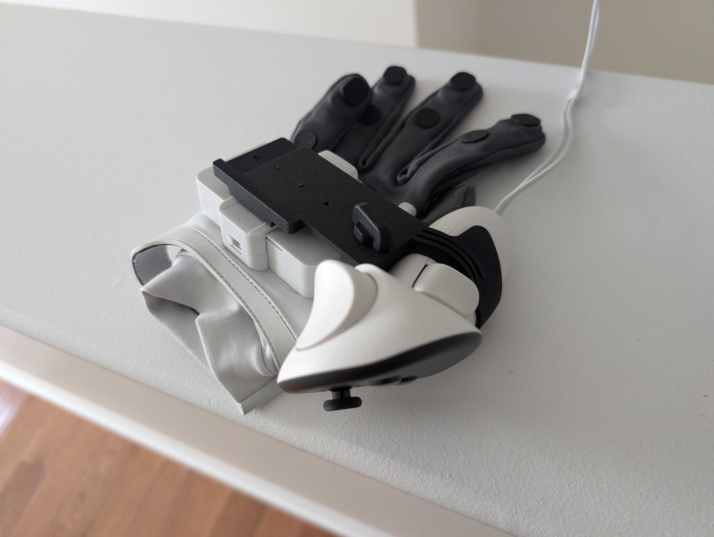
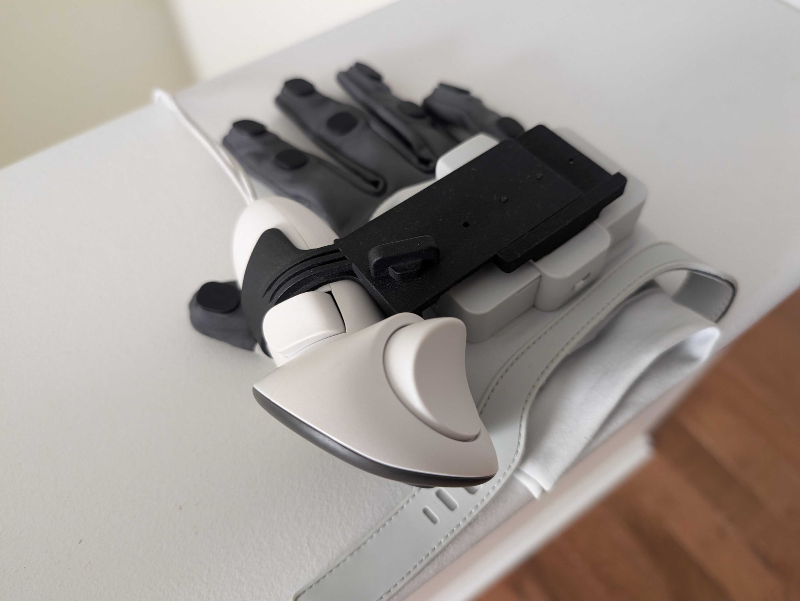

配置 Isaac Capture 与 CloudXR#
Isaac Capture （NVIDIA/IsaacCapture ）是 Isaac Lab 的高保真遥操作统一框架。它提供标准化设备接口、灵活的重定向管线，以及随附的 NVIDIA CloudXR 串流功能，用于基于 XR 的沉浸式遥操作。
本指南介绍如何配置 CloudXR、连接 XR 设备并开始第一次遥操作。更多信息见 Isaac Capture 快速入门 。
备注
Isaac Lab 目前锁定 1.4 版本的 isaacteleop 分发包和导入包。上游在 1.6 中将二者都改名为 isaaccapture ，因此本指南有意继续使用 isaacteleop 命令和导入。详情见 Isaac Capture 迁移指南 。
小技巧
架构细节、重定向管线、控制方案建议，以及添加新机器人形态或设备的方法，见 Isaac Capture 。
先决条件#
安装 Isaac Lab 并选择
teleop可选依赖组（见下文 安装 Isaac Capture ）。该节还说明 CloudXR 运行时所需的系统库。Isaac Lab 工作站
Ubuntu 22.04 或 Ubuntu 24.04
CPU：x86_64（ARM 支持即将提供）
GPU：需要 NVIDIA GPU。以 120 Hz 运行物理、达到 45 FPS 所需配置：
CPU：AMD Ryzen Threadripper 7960X 或更高
GPU：一块 RTX PRO 6000（或同等级型号，例如一块 RTX 5090）或更高
内存：64 GB RAM
驱动要求见 技术要求 指南。
Python 3.12 或更新版本
CUDA 12.8（推荐）
NVIDIA 驱动 580.95.05（推荐）
支持 Wi-Fi 6 的路由器
稳定的无线连接是高质量串流体验的基础。详细要求、路由器配置和故障排查见 CloudXR 网络配置 指南。
建议使用专用路由器；其他设备同时使用网络会降低串流质量。
XR 设备和 Isaac Lab 工作站必须能够通过 IP 相互访问。许多机构的无线网络禁止设备间连接。
备注
目前不支持在 DGX Spark 上进行遥操作。
工作站能力检查#
遥操作会话启动时，Isaac Lab 会按上述规格测量工作站，并报告不满足的要求。结果打印到终端，同时推送到已连接的 XR 客户端，在头显中显示为可关闭的横幅。因此，佩戴设备的操作员也能看到警告，而不必查看终端。
检查 仅供参考，不会阻止会话启动 。它报告以下项目：
要求 |
阈值 |
|---|---|
CPU 单线程性能 |
至少达到参考 CPU（AMD Ryzen Threadripper 7960X）的 80% |
CPU 频率调节策略 |
|
CPU 加速频率 |
4.0 GHz |
CPU 物理核心数 |
8 |
显存 |
24 GB |
GPU 架构 |
计算能力 8.9（Ada）或更新 |
NVIDIA 驱动 |
580 或更新版本 |
系统内存 |
60 GiB（标称 64 GB 的机器） |
CPU 架构 |
|
检查使用数值阈值，而不是认可的 CPU 和 GPU 型号列表，因此同等级硬件也能通过。CPU 单线程吞吐量的权重最高，通过短时基准测试测量，而不是根据核心数推断。Pink IK 和 CPU 侧物理受单线程性能限制，因此核心较少但单核更快的机器，遥操作表现会优于拥有许多较慢核心的机器。
小技巧
只有机器实测速度也较慢时，才会报告 CPU 频率调节策略问题。 Ubuntu 默认采用 powersave ，在遥操作这种突发性负载下，会增加每帧的升频延迟。不过，调节策略只是实际吞吐量的间接指标：如果工作站单线程得分已达到阈值，不论采用何种策略，都认为速度足够，不会标记问题。配置时仍建议设置 performance ，参见 安装 Isaac Capture 。
如果某项探测不可用，例如容器内未暴露 cpufreq ，则报告该项已跳过，而非失败。
多 GPU 工作站的 GPU 检查针对会话实际使用的设备，即 --device 选择的设备，而非简单检查第一块显卡。报告值会注明设备序号，例如 cuda:1 ，以明确测量的是哪块 GPU。
也可以单独运行检查，例如在配置会话前评估机器：
uv run --extra teleop,isaacsim python -c "from isaaclab_teleop import check_system_requirements; print(check_system_requirements().format_table())"
安装 Isaac Capture#
通过此方式，可以从 XR 头显遥操作机器人，并录制用于模仿学习的示范。它使用 teleop 可选依赖组，其中包含 Isaac Capture 及其 CloudXR 串流运行时，也包含 Isaac Sim，用于渲染双目视图的 Kit XR 运行时。一个选项即可覆盖整个工作流。
XR 遥操作 只支持 Linux x86_64 。 teleop 可选依赖组通过平台标记限制 isaacteleop 和 dex-retargeting ；因此在 Windows 或 aarch64 上，依赖组虽然能解析，却不会安装可用组件。DGX Spark 也不受支持。
isaaclab teleop 将三个工作流脚本组织在一起： run 用于实时会话， record 用于录制示范， replay 用于回放数据集。完成配置后， 下一节 会介绍如何运行会话。
备注
不能在同一条 uv run 命令中同时选择 teleop 和 ov 或 ovphysx ：随附的 Isaac Sim 锁定 packaging==26.0 ，而这些运行时要求 <24 。需要 OV 运行时时，应单独安装。
先完成以下步骤：
安装 CloudXR 运行时所需的系统库：
sudo apt-get update && sudo apt-get install -y libvulkan1 libbsd0
CloudXR 运行时在运行时链接 Vulkan。如果系统已安装 NVIDIA 驱动，
libvulkan1可能已经存在。将 CPU 频率调节策略设为
performance：# cpupower ships in linux-tools; install it if the command is not found sudo apt-get install -y linux-tools-common linux-tools-$(uname -r) sudo cpupower frequency-set -g performance
Ubuntu 默认的
powersave策略会明显增加 Pink IK 求解延迟，降低可达到的遥操作帧率。由于 IK 和 CPU 侧物理受单线程性能限制，这是工作站上影响较大的设置之一。验证修改：
cat /sys/devices/system/cpu/cpu0/cpufreq/scaling_governor预期输出：
performance。备注
此设置在重启后失效。重启后需再次运行命令，或通过 systemd 单元、发行版的
cpupower服务配置使其持久生效。 工作站能力检查 在会话启动时报告调节策略，因此机器恢复到powersave后，可以在注意到帧率下降前得到提示。isaacteleop包含在teleop可选依赖组中，无需单独执行 pip 安装。但它来自该依赖组，而非isaaclab_teleop的包元数据，所以单独安装isaaclab_teleop不会 安装它。源码构建或插件开发见 Isaac Capture GitHub 。配置防火墙以允许 CloudXR 流量。所需端口取决于客户端类型。
Apple 原生客户端 （CloudXR Framework）：
# Signaling (use one based on connection mode) sudo ufw allow 48010/tcp # Standard mode sudo ufw allow 48322/tcp # Secure mode # Video sudo ufw allow 47998/udp sudo ufw allow 48005/udp sudo ufw allow 48008/udp sudo ufw allow 48012/udp # Input sudo ufw allow 47999/udp # Audio sudo ufw allow 48000/udp sudo ufw allow 48002/udp
网页客户端 （通过内置 WSS 代理使用 CloudXR.js）：
sudo ufw allow 49100/tcp # Signaling (WebRTC) sudo ufw allow 47998/udp # Media stream sudo ufw allow 48322/tcp # WSS proxy (HTTPS)
完整网络要求和 Windows 防火墙说明见 CloudXR 网络配置 文档。
配合 CloudXR 运行 Isaac Lab#
启动遥操作脚本时，CloudXR 运行时会自动启动，无需另开终端或执行 source 。直接启动遥操作会话：
uv run --extra teleop,isaacsim isaaclab teleop run \
--task IsaacContrib-PickPlace-Locomanipulation-G1-Abs \
--visualizer kit \
--xr
./isaaclab.sh -p scripts/environments/teleoperation/teleop_se3_agent.py \
--task IsaacContrib-PickPlace-Locomanipulation-G1-Abs \
--visualizer kit \
--xr
要确认头显与控制器的跟踪位姿已传到 Isaac Lab，可在命令中添加 --enable_debug_visualization 。可视化会在跟踪到的手部关节位置绘制红色标记，并在控制器的指向位姿处绘制 RGB 坐标轴。详情见 显示 XR 跟踪数据 。
固定基座 G1 上半身操作应改选 IsaacContrib-PickPlace-FixedBaseUpperBodyIK-G1-Abs 。两个 G1 任务默认都在 XR 中启用随头部移动的机器人相机画中画面板。固定基座启动示例、相机录制差异和场景分区隔离行为见 XR 相机反馈 。
注意
首次运行需要接受 EULA。 首次启动时，Isaac Sim 会在仿真开始前提示接受 NVIDIA Omniverse 许可协议：
By installing or using Isaac Sim, I agree to the terms of NVIDIA OMNIVERSE LICENSE AGREEMENT
in https://docs.isaacsim.omniverse.nvidia.com/latest/common/NVIDIA_Omniverse_License_Agreement.html
Do you accept the EULA? (Yes/No):
输入 Yes 并按 Enter 继续。如果忽略了提示，脚本会看似卡住；若 Isaac Sim 几秒内未启动，请检查终端输出。
小技巧
上述 IsaacContrib-PickPlace-Locomanipulation-G1-Abs 任务以 运动控制器 作为输入：控制器的握持位姿驱动双臂，扳机和握压按钮闭合 TriHand 手指，摇杆控制移动和髋部高度。应双手各持一个控制器，而不是依靠光学手部跟踪。其他任务则可能要求手部跟踪，完整列表见 选择控制方案 表。
启动时可通过 --cloudxr_env 切换 CloudXR 设备配置，例如从 Quest 切换到 Apple Vision Pro。Apple Vision Pro 跟踪双手而非运动控制器，因此应搭配手部跟踪任务，例如 IsaacContrib-PickPlace-GR1T2-WaistEnabled-Abs ：
uv run --extra teleop,isaacsim isaaclab teleop run \
--task IsaacContrib-PickPlace-GR1T2-WaistEnabled-Abs \
--visualizer kit \
--xr \
--cloudxr_env avp
./isaaclab.sh -p scripts/environments/teleoperation/teleop_se3_agent.py \
--task IsaacContrib-PickPlace-GR1T2-WaistEnabled-Abs \
--visualizer kit \
--xr \
--cloudxr_env avp
随附 .env 配置及其自定义方法，见功能指南中的 CloudXR 环境配置文件 。
然后在 Isaac Sim 界面中：
找到 XR 面板，选择以下选项：
选择的输出插件: OpenXR
OpenXR 运行时: System OpenXR Runtime

点击 Start XR 。
视口底部状态栏应显示 "Waiting for connection"（等待连接）。只有头显连接并开始在设备上播放后，双目立体渲染才会启用。

Isaac Lab 已准备好接收 CloudXR 客户端连接。
备注
无界面运行（没有本地图形界面）。 上述命令使用 --visualizer kit 打开本地 Kit 视口，需要点击 Start XR 。在没有显示器的服务器或云实例上，应使用默认的无界面模式：省略 --visualizer ，或传入 --visualizer none / --viz none 。无界面 XR 中，AR 会话自动启动，无需在视口点击 Start XR ；CloudXR 客户端一连接，Isaac Lab 就开始串流。Isaac Lab 3.0 已移除 --headless 标志；设置环境变量 HEADLESS=1 也可强制无界面运行。
备注
ERROR_STREAMSDK_PORT_UNAVAILABLE / 49100 端口已被占用。 CloudXR 运行时绑定 TCP 49100 端口进行 WebRTC 信令通信。如果之前的 CloudXR 实例仍在运行， Server::create 会因这一错误失败。查明占用端口的进程，确认可以停止后再终止它；先尝试正常的 kill ，必要时再用 kill -9 ：
ss -tlnp | grep 49100 # or: lsof -i :49100
kill $(lsof -ti tcp:49100) # SIGTERM first
kill -9 $(lsof -ti tcp:49100) # only if it is still running
也可通过 NV_CXR_SERVER_PORT 环境变量设置其他端口。
连接 XR 设备#
Isaac Capture 支持多种 XR 头显。只需下列设备中的 一种 ，选择与你的硬件对应的选项卡。
Meta Quest 3 和 Pico 4 Ultra 通过 CloudXR.js WebXR 客户端连接 Isaac Lab。内置环境默认采用 cloudxrjs-cloudxr.env 配置（ auto-webrtc ），这正是这些设备所需的设置。
备注
Pico 4 Ultra 需要 Pico OS 15.4.4U 或更新版本，且必须使用 HTTPS 模式。
按照 配合 CloudXR 运行 Isaac Lab 启动遥操作脚本。CloudXR 运行时和 WSS 代理会自动启动。
在头显中打开浏览器，访问托管的 CloudXR.js 客户端： https://nvidia.github.io/IsaacCapture/client/release-1.4.x/ 。
备注
网页客户端 URL 带有版本。
release-1.4.x路径对应 Isaac Lab 锁定的isaacteleop版本，即根pyproject.toml的teleop依赖组中的isaacteleop~=1.4.145。Isaac Lab 更新遥操作依赖时，应将此链接更新为匹配的客户端版本。小技巧
开发时，可以先在桌面浏览器中测试 CloudXR.js 客户端，再部署到头显。
在 Server IP 字段中输入 Isaac Lab 主机的 IP 地址。
WSS 代理使用自签名证书，因此连接前必须接受它。点击页面上的 Click https://<ip>:48322/ to accept cert 链接。

新选项卡会显示 "Your connection is not private" （连接不安全）警告。点击 Advanced ，再点击 Proceed to <ip> (unsafe) 。

浏览器会显示 "Certificate Accepted" 页面，确认已接受证书。关闭该选项卡，返回 CloudXR.js 客户端页面。
点击 Connect 开始遥操作。
高级配置、故障排查及更多信息见 CloudXR.js 用户指南 。


Apple Vision Pro 通过原生 Isaac XR 遥操作示例客户端 应用连接 Isaac Lab。
重要
Apple Vision Pro 需要 auto-native 设备配置。启动遥操作脚本时，传入简写 avp ：
uv run --extra teleop,isaacsim isaaclab teleop run \
--task IsaacContrib-PickPlace-GR1T2-WaistEnabled-Abs \
--visualizer kit --xr \
--cloudxr_env avp
./isaaclab.sh -p scripts/environments/teleoperation/teleop_se3_agent.py \
--task IsaacContrib-PickPlace-GR1T2-WaistEnabled-Abs \
--visualizer kit --xr \
--cloudxr_env avp
随附配置的详情见 CloudXR 环境配置文件 。
构建并安装客户端应用
要求：
Apple Vision Pro，配备 visionOS 26、Apple M3 Pro 芯片（11 核 CPU）和 16 GB 统一内存
Apple Silicon Mac，配备 macOS Sequoia 15.6+ 和 Xcode 26.0
在您的 Mac 上:
克隆 Isaac XR 遥操作示例客户端 仓库：
git clone git@github.com:isaac-sim/isaac-xr-teleop-sample-client-apple.git
检出与 Isaac Lab 版本匹配的版本：
Isaac Lab 版本
客户端应用程序版本
3.0
v3.0.0
2.3
v2.3.0
git checkout <client_app_version>
按照存储库中的 README 构建并安装应用程序到您的 Apple Vision Pro 上。
使用 Apple Vision Pro 遥操作
小技巧
佩戴头显前 ，先从 Mac 验证连接：
nc -vz <isaac-lab-ip> 48010
预期输出: Connection to <ip> port 48010 [tcp/*] succeeded!
在 Isaac Lab 工作站上，确保 Isaac Lab 和 CloudXR 已按 配合 CloudXR 运行 Isaac Lab 启动。
在 Apple Vision Pro 上：
打开 Isaac XR Teleop Sample Client。

输入 Isaac Lab 工作站的 IP 地址，点击 Connect 。
备注
Apple Vision Pro 和工作站必须能通过 IP 相互访问。建议使用专用 Wi-Fi 6 路由器。
稍等片刻，头显中应显示渲染的仿真画面和遥操作控件。

点击 Play 开始遥操作。通过 Play 、 Stop 和 Reset 控制会话。
小技巧
对于双手任务，可用 visionOS 语音控制免手操作界面：
进入 Settings > Accessibility > Voice Control ，打开 Voice Control 。
在 Commands > Basic Navigation 下启用 <item name> 。
应用连接后，说出 "Play"、"Stop" 或 "Reset"。
移动双手，遥操作机器人。

备注
IK 求解器失败时，头显中会出现错误消息。点击 Reset ，将机器人恢复到初始位姿，再继续操作。

完成后点击 Disconnect 。
Manus 手套#
Manus 手套通过 Manus SDK 提供高保真手指跟踪，适用于头显光学手部跟踪被遮挡，或需要更高精度手指数据的情况。手套输入进入手部跟踪管线，因此应搭配 IsaacContrib-PickPlace-GR1T2-WaistEnabled-Abs 等手部跟踪任务，而非控制器驱动任务。在 Isaac Capture 中，Manus 跟踪数据与头显光学手部跟踪使用同一 API，因此二者可使用相同的重定向器和管线。
备注
Manus 手套支持已迁入 Isaac Capture，作为原生插件提供。以前的 isaac-teleop-device-plugins 仓库和基于 libsurvive 的 Vive 跟踪器集成已不再需要。
先决条件#
具有 Manus SDK 许可的 Manus 手套 ，已与 MANUS Core 应用配对、连接并完成校准。参见 MANUS Linux 入门指南 。
从 Isaac Capture 源码构建的
manus_hand_plugin插件 ：手套跟踪数据由独立 C++ 插件传输，需要与仿真一同运行。重要
manus_hand_plugin不随 Isaac Lab 提供，也 不包含 在isaacteleoppip 包或任何发布归档中。只有从源码构建 Isaac Capture 仓库后，它才会存在。如果 Isaac Capture 检出目录中没有install/plugins/manus/manus_hand_plugin，说明尚未完成这一步。克隆仓库，并检出与 Isaac Lab 锁定的
isaacteleop版本匹配的发布分支（根pyproject.toml的teleop依赖组目前锁定isaacteleop~=1.4.145），以确保插件的通信格式与 Isaac Lab 安装的isaacteleop包匹配：git clone https://github.com/NVIDIA/IsaacCapture.git cd IsaacCapture git checkout release/1.4.x
备注
Isaac Lab 更新遥操作依赖时，应改为检出匹配的
release/<version>.x分支。在宿主机上执行一次 ，授予主机访问 Manus 接收器的权限。不要在容器内执行：udev 规则由
systemd-udevd处理，而该服务不在 Docker 内运行，因此在容器内安装规则不会生效：cd src/plugins/manus ./install_udev_rules.sh # then unplug and replug the Manus dongle
随后，在用于构建的环境中（开发容器、Isaac ROS 容器或宿主机）安装
clang-format-14。缺少它是构建失败最常见的原因，因为根CMakeLists.txt默认在 Linux 上强制执行格式检查，而install_manus.sh不会帮你安装它：sudo apt-get update sudo apt-get install -y clang-format-14
然后下载 Manus SDK，构建并安装插件：
cd /path/to/IsaacCapture/src/plugins/manus ./install_manus.sh
脚本会安装其余必需系统包、下载 Manus SDK，并构建和安装插件及其诊断命令行工具。插件安装到
<IsaacCapture>/install/plugins/manus/manus_hand_plugin。本节后续所有命令均从 Isaac Capture 检出目录根部运行；请将/path/to/IsaacCapture替换为实际路径。使用诊断命令行工具验证构建结果和手套跟踪状态。它会打开 MANUS Data Visualizer 窗口，显示手部骨架。同一时间只能有一个进程占用 Manus SDK 连接，因此启动插件前应停止该工具：
cd /path/to/IsaacCapture ./install/bin/manus_hand_tracker_printer
不使用
install_manus.sh的手动安装方式、完整数据路径参考（骨架注入、弯曲传感器张量、触觉反馈）及故障排查，见 Manus 插件文档 。每只手配一个 Meta Quest 3 或 Pico 4 Ultra 控制器 ，用于确定手腕位置。每只 MANUS 手套的腕带背面都有 Universal Mount；将控制器卡入其中，使控制器握持位姿驱动手腕位置，而手套跟踪手指。插件如何在控制器和光学手腕跟踪之间选择，见 Manus 插件文档中的 手腕定位：控制器与光学手部跟踪 。

左手套#

右手套#


运行仿真#
按 配合 CloudXR 运行 Isaac Lab 所示，选择手部跟踪任务启动遥操作会话：
uv run --extra teleop,isaacsim isaaclab teleop run \
--task IsaacContrib-PickPlace-GR1T2-WaistEnabled-Abs \
--visualizer kit --xr
./isaaclab.sh -p scripts/environments/teleoperation/teleop_se3_agent.py \
--task IsaacContrib-PickPlace-GR1T2-WaistEnabled-Abs \
--visualizer kit --xr
重要
Manus 手套及其他外部推送设备需要 NV_CXR_ENABLE_PUSH_DEVICES=1 。随附 .env 配置将其设为 0 ，针对头显光学手部跟踪优化。创建自定义 .env 文件，将此值设为 1 ，再通过 --cloudxr_env 传入，替代上述普通命令：
# Copy a shipped profile and enable push devices
cp $(uv run --extra teleop,isaacsim python -c \
"from isaaclab_teleop import CLOUDXR_JS_ENV; print(CLOUDXR_JS_ENV)") ~/manus.env
sed -i 's/NV_CXR_ENABLE_PUSH_DEVICES=0/NV_CXR_ENABLE_PUSH_DEVICES=1/' ~/manus.env
uv run --extra teleop,isaacsim isaaclab teleop run \
--task IsaacContrib-PickPlace-GR1T2-WaistEnabled-Abs \
--visualizer kit --xr \
--cloudxr_env ~/manus.env
# Copy a shipped profile and enable push devices
cp $(python -c "from isaaclab_teleop import CLOUDXR_JS_ENV; print(CLOUDXR_JS_ENV)") ~/manus.env
sed -i 's/NV_CXR_ENABLE_PUSH_DEVICES=0/NV_CXR_ENABLE_PUSH_DEVICES=1/' ~/manus.env
./isaaclab.sh -p scripts/environments/teleoperation/teleop_se3_agent.py \
--task IsaacContrib-PickPlace-GR1T2-WaistEnabled-Abs \
--visualizer kit --xr \
--cloudxr_env ~/manus.env
自定义配置的完整说明见 CloudXR 环境配置文件 。
启动插件前，等待视口状态栏显示 "Waiting for connection" ；无界面运行时，则等待 CloudXR 运行时完成启动。参见 配合 CloudXR 运行 Isaac Lab 。
启动插件#
Isaac Lab 不会替你启动插件。仿真已启动且 CloudXR 正等待连接后，在 另一个终端 中，用 source 加载运行时启动时写出的环境文件（它将 OpenXR 加载器指向 CloudXR），再启动插件：
cd /path/to/IsaacCapture
source ~/.cloudxr/run/cloudxr.env
./install/plugins/manus/manus_hand_plugin
插件默认启用人手数据注入、弯曲传感器推送和触觉反馈读取。可用 --datasets= 限定数据集（以逗号分隔）；各数据路径详情见 Manus 插件文档 ：
./install/plugins/manus/manus_hand_plugin --datasets=human,sensors,haptic
./install/plugins/manus/manus_hand_plugin --datasets=human # skeleton only
启动遥操作#
戴上 Manus 手套和头显。
将头显连接到 Isaac Lab：Meta Quest 3 / Pico 4 Ultra 按 上述连接步骤 操作，Apple Vision Pro 按 Apple Vision Pro 步骤 操作。头显连接后，手套无需额外配对；Manus 跟踪数据在同一 OpenXR 路径上替代头显自身的手部跟踪。
从头显发送启动命令：Meta Quest 3 / Pico 4 Ultra 使用 CloudXR.js 的 Connect 按钮；Apple Vision Pro 使用 Isaac XR Teleop Sample Client 的 Play 按钮。
移动双手，仿真中的从动机器人会实时跟随手套跟踪到的手指关节。
配合 Quest 使用 Haptikos 外骨骼#
Haptikos 插件 将控制器手腕位姿与 Haptikos Core App 的外骨骼手指跟踪相结合，把手部关节推送到 OpenXR 运行时。Isaac Lab 通过 Isaac Capture 的标准手部跟踪输入接收数据，因此无需 Haptikos 专用的 Isaac Lab 设备。该插件支持 Linux，已在 Meta Quest 头显上测试；其他带控制器的头显也可能可用。
构建插件#
Haptikos 插件需从 Isaac Capture 源码构建，不包含在 Isaac Lab 的 teleop 可选依赖组中。检出与 Isaac Lab 锁定的 isaacteleop 版本匹配的发布分支（目前为 1.4.x ），获取 Haptikos Robotics API ，并将其 HaptikosCpp_API_Shared 目录复制到 src/plugins/haptikos 。即使不使用触觉反馈，构建跟踪插件也需要 C++ API。Haptikos 账号和许可要求见 插件配置说明 。
git clone https://github.com/NVIDIA/IsaacCapture.git
cd IsaacCapture
git checkout release/1.4.x
# Copy HaptikosCpp_API_Shared to src/plugins/haptikos before building.
cmake -S . -B build -DENABLE_CLANG_FORMAT_CHECK=OFF
cmake --build build --target haptikos_hands_plugin --parallel 4
运行 Isaac Lab 与插件#
使用随附支架，为每个外骨骼安装一个控制器。以头显为参照校准外骨骼前向方向，然后保持 Haptikos Core App、外骨骼和控制器运行。使用下列手部跟踪任务。
Haptikos 使用外部 OpenXR 推送设备。随附 CloudXR 配置禁用推送设备，因此启动 Isaac Lab 前，应在自定义配置中启用：
cp $(uv run --extra teleop,isaacsim python -c \
"from isaaclab_teleop import CLOUDXR_JS_ENV; print(CLOUDXR_JS_ENV)") ~/haptikos.env
sed -i 's/NV_CXR_ENABLE_PUSH_DEVICES=0/NV_CXR_ENABLE_PUSH_DEVICES=1/' ~/haptikos.env
uv run --extra teleop,isaacsim isaaclab teleop run \
--task IsaacContrib-PickPlace-GR1T2-WaistEnabled-Abs \
--visualizer kit --xr --cloudxr_env ~/haptikos.env
CloudXR 开始等待连接后，另开终端，使用 Isaac Lab 创建的运行时环境启动插件：
cd /path/to/IsaacCapture
source ~/.cloudxr/run/cloudxr.env
./build/src/plugins/haptikos/haptikos_hands_plugin
按 Quest/Pico 连接步骤 连接 Quest，再从头显开始遥操作。
自定义配置的更多信息见 CloudXR 环境配置文件 。
使用 Docker 运行#
遥操作在 单个容器 中运行。自行构建镜像并运行一个容器。 不要使用 Docker Compose；它采用 Isaac Lab 2.x 中曾使用的多容器配置。本版本所有组件与 Isaac Lab 一同运行在一个容器中。
启动遥操作脚本时，CloudXR 运行时会自动启动，无需单独执行运行时命令。
注意
较新的 Isaac Lab Docker 镜像（3.0.0-beta2 及以后）以 非 root 用户运行，uid/gid 为 1000。旧的 root 镜像创建的持久命名卷或宿主机目录归 root 所有，运行时用户 无法写入 。XR 遥操作往往最先遇到此问题，因为它会在运行时主目录下写入扩展注册表缓存。故障通常如下:
[Error] [carb.scripting-python.plugin] PermissionError: [Errno 13] Permission denied: '/root/.local/share/ov/data/exts'
随后出现一系列扩展注册表错误:
[Error] [omni.ext.plugin] Syncing with extension registry unavailable.
重新启动前，使 uid/gid 1000 能写入持久存储，即可修复：
Docker Compose： 重新创建命名卷，例如：
docker compose --file docker-compose.yaml --profile base --env-file .env.base down --volumes
详情见 在 Docker 中运行 Isaac Lab 。如果希望保留缓存数据而非删除，可修改卷的所有权：
docker run --rm -v docker_isaac-data:/data alpine chown -R 1000:1000 /data。使用绑定挂载的单个容器： 启动前创建宿主机目录，并执行
sudo chown -R 1000:1000，使非 root 用户可写入。
Isaac Lab 容器采用 network_mode: host ，其端口直接暴露在宿主机网络栈上。因此，XR 设备能否访问 Isaac Lab 由宿主机防火墙决定。启动容器前，在 宿主机上 应用 安装 Isaac Capture 中相同的 ufw 规则：
sudo ufw allow 49100/tcp # Signaling (WebRTC)
sudo ufw allow 47998/udp # Media stream
sudo ufw allow 48322/tcp # WSS proxy — required for cert acceptance and streaming
sudo ufw allow 48010/tcp # Standard mode signaling
sudo ufw allow 48322/tcp # Secure mode signaling
sudo ufw allow 47998/udp
sudo ufw allow 48005/udp
sudo ufw allow 48008/udp
sudo ufw allow 48012/udp
sudo ufw allow 47999/udp
sudo ufw allow 48000/udp
sudo ufw allow 48002/udp
备注
如果未开放 48322 端口，头显浏览器访问证书接受页面时，会显示 "This site can't be reached" （无法访问此网站）。此时 TCP 连接在证书交换开始前就已失败。
运行遥操作脚本，例如用 record_demos.py 录制示范：
uv run --extra teleop,isaacsim isaaclab teleop record \
--task IsaacContrib-PickPlace-Locomanipulation-G1-Abs \
--num_demos 5 \
--dataset_file ./datasets/dataset.hdf5 \
--xr --visualizer kit
./isaaclab.sh -p scripts/tools/record_demos.py \
--task IsaacContrib-PickPlace-Locomanipulation-G1-Abs \
--num_demos 5 \
--dataset_file ./datasets/dataset.hdf5 \
--xr --visualizer kit
然后，在 Isaac Sim 界面中，将 XR 面板设为 System OpenXR Runtime ，并点击 Start XR 。
如需完全无界面运行，将 --visualizer kit 换为 --visualizer none 或 --viz none ，XR 遥操作会话便会自动运行。